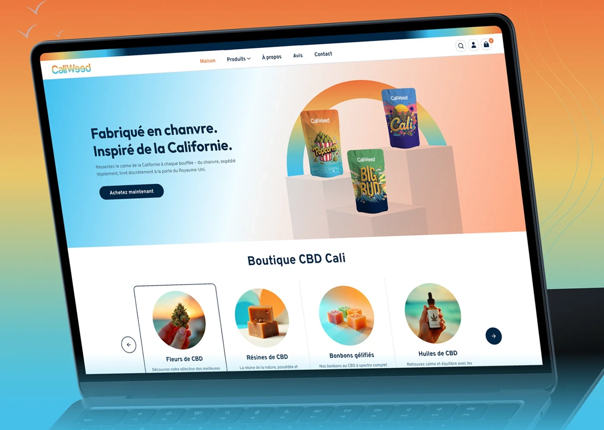

Strip away the unnecessary. Embrace the uncomfortable. Challenge conventions through stark minimalism and brutalist principles that demand attention and respect the user's intelligence.
Every element serves a purpose. No decoration without function. The grid is visible, the structure is honest, and the typography speaks louder than any ornament ever could.
Design that doesn't apologize. Interfaces that challenge users to think differently. Bold choices that prioritize substance over superficial aesthetics while maintaining rigorous attention to detail.

A radical reimagining of enterprise software interfaces. Stripped down to essential functions, elevated through brutal honesty in design execution.
A radical reimagining of enterprise software interfaces. Stripped down to essential functions, elevated through brutal honesty in design execution.
Deep dive into user needs, market context, and technical constraints. No assumptions, only data driven insights.
Bold ideation sessions that challenge conventions. Sketching raw concepts that prioritize function over form.
Ruthless refinement. Every pixel justified. Grid-based layouts that expose structure rather than hide it.
Rigorous testing and iteration. Handoff with comprehensive documentation that respects the developer's craft.